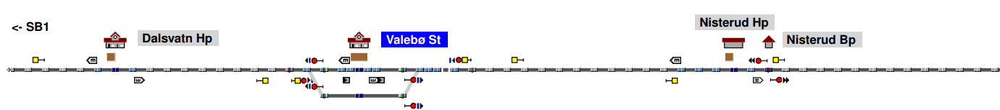
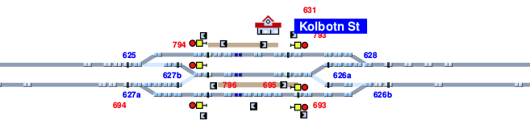
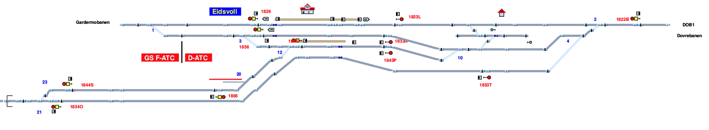
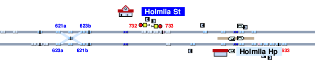
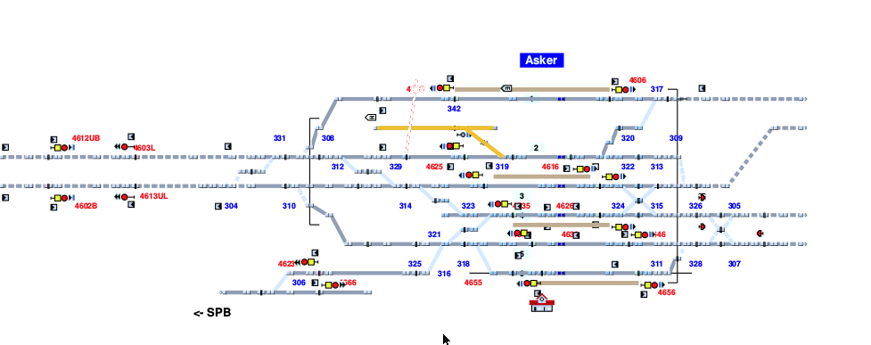
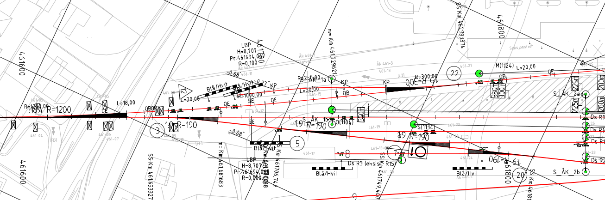

Rolling
Simulation model
Infrastructure
Interlocking
Dispatch
Simulation examples
Simplest examples
Single
This is the simplest example of a working train station in rolling.
The infrastructure is a single signal with detection sections in the front and back.
boundary b1
node b1-n1(enter a1,sight sig 100.0)
linear n1-n2 100.0
node n2-n3(signal sig, enter a2)
linear n3-n4 100.0
node n4-b2(exit a2)
boundary b2
There is one entry and one exit train route.
modelentry ri from b1 {
exit sig
length 100.0
sections [] switches [] contains []
}
modelexit re to b2 {
entry sig
entrysection a2
length 10000.0
sections []
switches [] contains []
}
We dispatch a short train.
train t1 l=35.0 a=1.0 b=1.0 v=10.0 ri
wait 30.0
route re
And the results from rolling are:
Single
This is the simplest example of a working train station in rolling.
The infrastructure is a single signal with detection sections in the front and back.
boundary b1
node b1-n1
linear n1-n2 1.0
node n2-n3(sight s1 249.0)
linear n3-n4 249.0
node n4(exit a1)-n5(signal s1, enter a1)
linear n5-n6 1150.0
node n6-n7(sight s2 600.0)
linear n7-n8 600.0
node n8(exit a2, enter a1)-n9(signal s2, exit a1, enter a2)
linear n9-n10 925.0
node n10-n11(sight s3 75.0)
linear n11-n12 75.0
node n12(enter a2, exit a3)-n13(signal s3, exit a2, enter a3)
linear n13-n14 500.0
node n14(enter a3)-b2(exit a3)
boundary b2
There is one entry and one exit train route.
modelentry ri from b1 {
exit s1
length 250.0
sections [] switches [] contains []
}
modelexit re to b2 {
entry s3
entrysection a3
length 5000.0
sections [] switches [] contains []
}
route r1 {
entry s1 exit s2
entrysection a1
length 1750.0
sections [a1]
switches []
contains []
}
route r2 {
entry s2 exit s3
entrysection a2
length 1000.0
sections [a2]
switches []
contains []
}
We dispatch a short passenger train.
train t1 l=200.0 a=1.0 b=0.9 v=10.0 ri
route r1
wait 150.0
route r2
route re
And the results from rolling are:
Two track station
train t1 l=100.0 a=0.5 b=0.5 v=10.0 ri
route rleft
wait 110.0
route releft
Multiple trains on a two-track station
Release of resources
In order to have multiple trains using the same routes at different times, resources need to be released
after one train has finished the route. We may use the release statement inside a route to specify
one or more groups of resources which may be release, and which detector triggers the release.
modelentry ri from b1 {
exit sa
length 500.0
sections [] switches [] contains []
}
modelexit re1 to b2 {
entry s1x
entrysection a2
length 8000.0
sections [a2]
switches [] contains []
}
modelexit re2 to b2 {
entry s2
entrysection a2
length 8000.0
sections [a2]
switches [] contains []
}
route r1 {
entry sa exit s1
entrysection a1
length 600.0
sections [a1]
switches [sw1 left]
contains []
}
route r1x {
entry s1 exit s1x
entrysection a3
length 200.0
sections [a3]
switches []
contains []
}
route r2 {
entry sa exit s2
entrysection a1
length 800.0
sections [a1]
switches [sw1 right]
contains []
}
Dispatch
train t1 l=100.0 a=0.5 b=0.5 v=10.0 ri
route r1
wait 110.0
route r1x
train t2 l=100.0 a=0.5 b=0.5 v=10.0 ri
route r2
wait 130.0
route re2
route re1
Partial release
Crossing
Two-track station with two-way traffic. Shows example of crossing.
Dispatch
train t1 l=175.0 a=0.8 b=0.8 v=25.0 rentrya
route ra2
wait 50.0
train t2 l=175.0 a=0.8 b=0.8 v=25.0 rentryb
route rb1
route rexitb1
route rexita2
Result
Planning model
Verification examples
Running time verification
Using the two track bidirectional station from previous examples, we now turn to verifying the running time for a single train across the station.
The properties to be verified are summarized in the usage file:
vehicle passengertrain length 150.0 accel 1.0 brake 0.9 maxspeed 20.0
movement passengertrain {
visit #start [b1]
visit #end [b2]
}
timing start end 150.0
Running the railperfcheck program on this usage gives success, and outputs
the following dispatch plan:
route ra2
route rexita2
train t1 l=150.0 a=1.0 b=0.9 v=20.0 rentrya
Witness
The plan represents a witness for the satisfaction of the properties given in the usage file, and the results can be inspected as usual.
Frequency
An important performance indicator for a railway station is the
frequency with which it can handle consecutive trains.
To verify e.g. that the two-track station can handle
a passenger train every 90 sec, we write the following usage file:
vehicle passengertrain length 150.0 accel 1.0 brake 0.9 maxspeed 20.0
movement passengertrain {
visit #start_p1 [b1]
visit #end_p1 [b2]
}
movement passengertrain {
visit #start_p2 [b1]
visit #end_p2 [b2]
}
movement passengertrain {
visit #start_p3 [b1]
visit #end_p3 [b2]
}
movement passengertrain {
visit #start_p4 [b1]
visit #end_p4 [b2]
}
timing end_p1 end_p2 50.0
timing end_p2 end_p3 50.0
timing end_p3 end_p4 50.0
Running the railperfcheck program on this usage gives success, and outputs
the following dispatch plan:
route ra2
route rexita2
train t4 l=150.0 a=1.0 b=0.9 v=20.0 rentrya
wait
route ra1
route rexita1
train t3 l=150.0 a=1.0 b=0.9 v=20.0 rentrya
wait
route ra1
route rexita1
train t2 l=150.0 a=1.0 b=0.9 v=20.0 rentrya
wait
route ra2
route rexita2
train t1 l=150.0 a=1.0 b=0.9 v=20.0 rentrya
Witness
The plan represents a witness for the satisfaction of the properties given in the usage file, and the results can be inspected as usual.
Overtaking
To check that one train is able to overtake another, we require two movements and put timing constraints on their entry and exit which require one train to enter first and the other train to exit first.
vehicle passengertrain length 150.0 accel 1.0 brake 0.9 maxspeed 20.0
vehicle goodstrain length 650.0 accel 1.0 brake 0.9 maxspeed 20.0
movement passengertrain {
visit #p_in [b1]
visit #p_out [b2]
}
movement goodstrain {
visit #g_in [b1]
visit #g_out [b2]
}
timing p_in g_in
timing g_out p_out
Note that if we had instead required the long goods train to enter first, the verification would fail, as the goods train would block all paths for the passenger train. The constraints would be as follows:
timing start_g start_p
timing end_p end_g
Result
When the passenger train goes first, we get the following successful dispatch plan:
route ra2
train t2 l=150.0 a=1.0 b=0.9 v=20.0 rentrya
wait
route ra1
route rexita1
train t1 l=650.0 a=1.0 b=0.9 v=20.0 rentrya
wait
route rexita2
Crossing
Two-track station with two-way traffic. Verify that trains can cross.
vehicle passengertrain length 150.0 accel 1.0 brake 0.9 maxspeed 40.0
vehicle goodstrain length 850.0 accel 0.5 brake 0.4 maxspeed 20.0
movement passengertrain {
visit #start_p [b2]
visit #end_p [b1]
}
movement goodstrain {
visit #start_g [b1]
visit #end_g [b2]
}
timing start_p end_g
timing start_g end_p
Dispatch
route ra1
route rb2
train t1 l=850.0 a=0.5 b=0.4 v=20.0 rentrya
train t2 l=150.0 a=1.0 b=0.9 v=40.0 rentryb
wait
route rexita1
wait
route rexitb2
Result
Input conversion from railML
Conversion from railML
Trivial handwritten example/test file
<?xml version="1.0" encoding="utf-8"?>
<railml xmlns:xsd="http://www.w3.org/2001/XMLSchema" xmlns:xsi="http://www.w3.org/2001/XMLSchema-instance" xmlns="http://www.railml.org/schemas/2013">
<infrastructure>
<tracks>
<track name="SP1">
<trackTopology>
<trackBegin pos="0.0">
<openEnd id="b1" />
</trackBegin>
<trackEnd pos="1000.0">
<openEnd id="b2" />
</trackEnd>
<connections>
</connections>
</trackTopology>
<ocsElements>
<signals>
<signal id="sig1" name="Signal 1" pos="50.0" type="main" dir="up"/>
<signal id="sig2" name="Signal 2" pos="250.0" type="main" dir="up"/>
<signal id="sig3" name="Signal 3" pos="350.0" type="main" dir="up"/>
</signals>
<trainDetectionElements>
<trainDetector id="d0" name="detector 1" pos="10.0" />
<trainDetector id="d1" name="detector 1" pos="50.0" />
<trainDetector id="d2" name="detector 2" pos="250.0" />
<trainDetector id="d3" name="detector 2" pos="350.0" />
<trainDetector id="d4" name="detector 2" pos="390.0" />
</trainDetectionElements>
</ocsElements>
</track>
</tracks>
</infrastructure>
</railml>
Generated output
Infrastructure
node b1-n0b
node n1a-n1b(sight sig1 50)
node n2a(exit sec0)-n2b(enter sec0)
node n3a-n3b(signal sig1)
node n4a(enter sec0, exit sec1)-n4b(exit sec0, enter sec1)
node n5a-n5b(sight sig2 200)
node n6a-n6b(sight sig3 200)
node n7a-n7b(signal sig2)
node n8a(enter sec1, exit sec2)-n8b(exit sec1, enter sec2)
node n9a-n9b(signal sig3)
node n10a(enter sec2, exit sec3)-n10b(exit sec2, enter sec3)
node n11a(enter sec3)-n11b(exit sec3)
node n12a-b2
boundary b1
linear n0b-n1a 0
linear n1b-n2a 10
linear n2b-n3a 40
linear n3b-n4a 0
linear n4b-n5a 0
linear n5b-n6a 100
linear n6b-n7a 100
linear n7b-n8a 0
linear n8b-n9a 100
linear n9b-n10a 0
linear n10b-n11a 40
linear n11b-n12a 610
boundary b2
Routes
modelentry r1 from b1 {
exit sig1
length 50
sections [sec0]
switches []
contains []
release { length 50 trigger sec0 resources [sec0] }
}
route r2 {
entry sig1
exit sig2
entrysection sec1
length 200
sections [sec1]
switches []
contains []
release { length 200 trigger sec1 resources [sec1] }
}
route r3 {
entry sig2
exit sig3
entrysection sec2
length 100
sections [sec2]
switches []
contains []
release { length 100 trigger sec2 resources [sec2] }
}
modelexit r4 to b2 {
entry sig3
entrysection sec3
length 1650
sections [sec3]
switches []
contains []
}
View
Conversion from railML
Handwritten example/test file
<?xml version="1.0" encoding="utf-8"?>
<railml xmlns:xsd="http://www.w3.org/2001/XMLSchema" xmlns:xsi="http://www.w3.org/2001/XMLSchema-instance" xmlns="http://www.railml.org/schemas/2013">
<infrastructure>
<tracks>
<track name="SP1">
<trackTopology>
<trackBegin pos="0.0">
<openEnd id="b1" />
</trackBegin>
<trackEnd pos="1000.0">
<openEnd id="b2" />
</trackEnd>
<connections>
</connections>
</trackTopology>
<ocsElements>
<signals>
<signal id="sig1" name="Signal 1" pos="50.0" type="main" dir="up"/>
<signal id="sig2" name="Signal 2" pos="250.0" type="main" dir="up"/>
<signal id="sig3" name="Signal 3" pos="350.0" type="main" dir="up"/>
</signals>
<trainDetectionElements>
<trainDetector id="d0" name="detector 1" pos="10.0" />
<trainDetector id="d1" name="detector 1" pos="50.0" />
<trainDetector id="d2" name="detector 2" pos="250.0" />
<trainDetector id="d3" name="detector 2" pos="350.0" />
<trainDetector id="d4" name="detector 2" pos="390.0" />
</trainDetectionElements>
</ocsElements>
</track>
</tracks>
</infrastructure>
</railml>
Generated output
Infrastructure
node b1-n0b
node n1a-n1b(sight sig1 50)
node n2a(exit sec0)-n2b(enter sec0)
node n3a-n3b(signal sig1)
node n4a(enter sec0, exit sec1)-n4b(exit sec0, enter sec1)
node n5a-n5b(sight sig2 200)
node n6a-n6b(sight sig3 200)
node n7a-n7b(signal sig2)
node n8a(enter sec1, exit sec2)-n8b(exit sec1, enter sec2)
node n9a-n9b(signal sig3)
node n10a(enter sec2, exit sec3)-n10b(exit sec2, enter sec3)
node n11a(enter sec3)-n11b(exit sec3)
node n12a-b2
boundary b1
linear n0b-n1a 0
linear n1b-n2a 10
linear n2b-n3a 40
linear n3b-n4a 0
linear n4b-n5a 0
linear n5b-n6a 100
linear n6b-n7a 100
linear n7b-n8a 0
linear n8b-n9a 100
linear n9b-n10a 0
linear n10b-n11a 40
linear n11b-n12a 610
boundary b2
Routes
modelentry r1 from b1 {
exit sig1
length 50
sections [sec0]
switches []
contains []
release { length 50 trigger sec0 resources [sec0] }
}
route r2 {
entry sig1
exit sig2
entrysection sec1
length 200
sections [sec1]
switches []
contains []
release { length 200 trigger sec1 resources [sec1] }
}
route r3 {
entry sig2
exit sig3
entrysection sec2
length 100
sections [sec2]
switches []
contains []
release { length 100 trigger sec2 resources [sec2] }
}
modelexit r4 to b2 {
entry sig3
entrysection sec3
length 1650
sections [sec3]
switches []
contains []
}
View
Case studies
Valebø
Station converted from Bane NOR's model of the Norweigan national rail network. This example demonstrates conversion from railML on a simple two track station. Tracks, switches, signals and detectors are imported from railML, while routes are derived from signal and detector placement. This may or may not be equal to the actual routes in use on the station, but suffices for our demonstrations.

View
Usage
The view above solves the following usage scenario:
vehicle passengertrain length 150.0 accel 1.0 brake 0.9 maxspeed 20.0
movement passengertrain {
visit #start [sb1]
visit #end [skien]
}
... by presenting the following dispatch plan:
route r2
route r5
route r6
route r7
train t1 l=150.0 a=1.0 b=0.9 v=20.0 r1
Kolbotn
Station converted from Bane NOR's model of the Norweigan national rail network. This example demonstrates conversion from railML for a double track station with a secondary track in the middle.
Tracks, switches, signals and detectors are imported from railML, while routes are derived from signal and detector placement. This may or may not be equal to the actual routes in use on the station, but suffices for our demonstrations.

View
Usage
The view above solves the following usage scenario:
vehicle short length 110.0 accel 1.0 brake 0.9 maxspeed 20.0
vehicle long length 220.0 accel 1.0 brake 0.9 maxspeed 10.0
movement short {
visit #ax1 [inR]
visit #ax2 [outR]
}
movement short {
visit #bx1 [outL]
visit #bx2 [inL]
}
movement long {
visit #ay1 [inR]
visit #ay2 [outR]
}
movement long {
visit #by1 [outL]
visit #by2 [inL]
}
timing bx1 by1
timing by2 bx2
timing ax1 ay1
timing ay2 ax2
... by presenting the following dispatch plan:
route r11
route r19
train t3 l=110.0 a=1.0 b=0.9 v=20.0 r9
train t4 l=110.0 a=1.0 b=0.9 v=20.0 r17
wait
route r10
route r15
route r30
train t1 l=220.0 a=1.0 b=0.9 v=10.0 r9
train t2 l=220.0 a=1.0 b=0.9 v=10.0 r17
wait
route r18
route r21
route r5
route r12
route r30
wait
route r20
route r21
Eidsvoll
Station converted from Bane NOR's model of the Norweigan national rail network. This example demonstrates conversion from railML for a line merge on several single tracks.
Tracks, switches, signals and detectors are imported from railML, while routes are derived from signal and detector placement. This may or may not be equal to the actual routes in use on the station, but suffices for our demonstrations.

View
Usage
The view above solves the following usage scenario:
vehicle short length 110.0 accel 1.0 brake 0.9 maxspeed 40.0
vehicle long length 220.0 accel 1.0 brake 0.9 maxspeed 30.0
vehicle goods length 650.0 accel 0.7 brake 0.65 maxspeed 10.0
movement long {
visit #ax1 [gardermobanen]
visit #ax2 [dovrebanen]
}
movement long {
visit #ay1 [gardermobanen]
visit #ay2 [dovrebanen]
}
movement long {
visit #bz1 [dovrebanen]
visit #bz2 [hovedbanen]
}
movement long {
visit #az1 [dovrebanen]
visit #az2 [hovedbanen]
}
movement goods {
visit #cz1 [dovrebanen]
visit #cz2 [hovedbanen]
}
... by presenting the following dispatch plan:
route r19
route r9
route r2
train t3 l=220.0 a=1.0 b=0.9 v=30.0 r8
train t4 l=220.0 a=1.0 b=0.9 v=30.0 r1
wait
route r7
route r3
train t5 l=220.0 a=1.0 b=0.9 v=30.0 r1
wait
route r9
train t1 l=650.0 a=0.7 b=0.65 v=10.0 r8
wait
route r10
route r16
route r18
train t2 l=220.0 a=1.0 b=0.9 v=30.0 r8
wait
route r19
route r6
Holmlia
Station converted from Bane NOR's model of the Norweigan national rail network. This example demonstrates conversion from railML for a station with a diamond crossing. The diamond crossing is not yet supported.

View
Usage
The view above solves the following usage scenario:
vehicle passengertrain length 150.0 accel 1.0 brake 0.9 maxspeed 20.0
movement passengertrain {
visit #start [inR]
visit #end [outR]
}
... by presenting the following dispatch plan:
route r11
route r25
route r26
route r27
train t1 l=150.0 a=1.0 b=0.9 v=20.0 r20
Asker
Station converted from Bane NOR's model of the Norweigan national rail network. This example demonstrates conversion from railML for a double junction station, connecting one double track with two double tracks, with additional station tracks.
Tracks, switches, signals and detectors are imported from railML, while routes are derived from signal and detector placement. This may or may not be equal to the actual routes in use on the station, but suffices for our demonstrations.

View
Usage
The view above solves the following usage scenario:
vehicle short length 110.0 accel 1.0 brake 0.9 maxspeed 20.0
vehicle long length 220.0 accel 1.0 brake 0.9 maxspeed 10.0
movement short {
visit #ax1 [DBinH]
visit #ax2 [DBoutH]
}
... by presenting the following dispatch plan:
route r14
route r7
train t1 l=110.0 a=1.0 b=0.9 v=20.0 r11
Arna
Station converted from engineering project using RailCOMPLETE software. This example demonstrates conversion from railML for a single to double track junction with additional station tracks including a pendulum train cul-de-sac.
Tracks, switches, signals and detectors are imported from railML, while routes are derived from signal and detector placement. This may or may not be equal to the actual routes in use on the station, but suffices for our demonstrations.

View
Usage
The view above solves the following usage scenario:
vehicle short length 110.0 accel 1.0 brake 0.9 maxspeed 20.0
vehicle long length 220.0 accel 1.0 brake 0.9 maxspeed 10.0
movement short {
visit #ax1 [rbff4z]
visit #ax2 [bergen2]
}
... by presenting the following dispatch plan:
Case A
Station from Norwegian engineering project, preliminary design.
vehicle passengertrain length 150.0 accel 1.0 brake 0.9 maxspeed 20.0
movement passengertrain {
visit [b1]
visit [b2iii]
}
View
Plan
route r01x65
route r65x75
route r75x
train t1 l=150.0 a=1.0 b=0.9 v=20.0 re1
Infrastructure
-- TODO sight
--
-- Leftmost node is free-standing distant signal Fs11001
--
-- S: Entry section
boundary b1
node b1(exit a114a)-ne1b(sight hs11001 1225.0, enter a114a)
linear ne1b-ne2a 1225.0
node ne2a(enter a114a, exit a201)-ne2b(exit a114a, enter a201, signal hs1101)
linear ne2b-ne3a 250.0
node ne3a(enter a201, exit a203, signal hs11004)-ne3b(exit a201, enter a203)
linear ne3b-ne4a 395.0 -- 645 - 250
node ne4a-ne4b
-- SPV 1
-- 719 - 395
switch spv1 left ne4b-(n31a 162.0, n11a 100.0)
-- S: Track 3 (top)
node n31a(enter a205,exit a202)-n31b(exit a205,enter a202)
--linear n31b-n32a 50.0
switch spv22 right n32a-(n31b 50.0, nvx22end 50.0)
node nvx22end-nvx22endstop
node n32a-n32b
linear n32b-n33a 50.0
node n33a(enter a202, exit a204, signal hs11016)-n33b(exit a202, enter a204, sight hs11065 422.0)
linear n33b-n34a 422.0
node n34a(enter a204, exit a206)-n34b(exit a204, enter a206, signal hs11065, sight hs11075 371.0)
-- Ignoring the crossing for now. Joining 206-208-210 into 206
linear n34b-n35a 271.0
node n35a(enter a206, exit a212)-n35b(exit a206, enter a212)
switch spv4 left n36a-(n91b 111.0, n35b 111.0)
node n91a(enter a250, exit a212)-n91b(enter a212, exit a250)
node n36a-n36b
linear n36b-n37a 100.0
-- Skip 214
node n37a(enter a212, exit a216)-n37b(enter a216, exit a212, signal hs11075)
linear n37b-n38a 250.0
node n38a(enter a216, exit a218, signal hs11006)-n38b(exit a216, enter a218)
linear n38b-n39a 250.0
node n39a(enter a218)-n39b(exit a218)
linear n39b-n310a 750.0
node n310a-b2iii
boundary b2iii
-- Exit on upper track to BRG
-- S: Track 1 (mid)
node n11a-n11b
switch spv3 right n11b-(n12a 52.0, n41a 53.0)
node n12a(enter a205, exit a207,signal hs11036)-n13b(enter a207, exit a205)
linear n13b-n14a 396.0
node n14a(enter a207, exit a209)-n14b(enter a209, exit a207, signal hs11005)
switch spv10 left n15a-(n46b 50.0,n14b 50.0)
node n15a-n15b
linear n15b-n16a 50.0
node n16a(enter a209, exit a211)-n16b(enter a211, exit a209)
linear n16b-n17a 50.0
node n17a-n17b
switch spv11 left n17b-(n61a 50.0, n18a 50.0)
node n18a(enter a211, exit a213)-n18b(enter a213, exit a211)
linear n18b-n19a 50.0
node n19a(enter a213, exit a215, signal hs11066)-n19b(enter a215, exit a213)
linear n19b-n110a 844.0
node n110a(exit a217, enter a215)-n110b(enter a217, exit a215, signal hs11015)
--linear n110b-n111a 371.0
switch spv2 right n111a-(n110b 371.0, n2xb 106.0)
node n111a-n111b
linear n111b-n112a 40.0
-- JOIN a219 into a217)
node n112a(enter a217, exit a221, signal hs11056)-n112b(enter a221, exit a217)
linear n112b-n113a 250.0
node n113a(enter a221)-n113b(exit a221)
linear n113b-n114a 750.0
node n114a-b2i
boundary b2i
-- TRACK 2
node n20a-n20b
linear n20b-n21a 253.0
node n21a(enter a240)-n21b(exit a240, enter a244)
linear n21b-n22a 100.0
node n22a(enter a244, exit a248)-n22b(enter a244, exit a248)
node n23a-n23b
switch spv6 left n23a-(n62b 150.0, n22b 50.0)
linear n23b-n24a 50.0
node n24a(enter a248, exit a250)-n24b(exit a248, enter a250)
linear n24b-n25a 50.0
node n25a-n25b
switch spv15 left n25b-(n91a 50.0, n26a 500.0)
node n26a(enter a250, exit a217)-n26b(exit a250, enter a217, signal hs11035)
linear n26b-n2xa 100.0
node n2xa-n2xb
-- S: Track "6" (unnamed) mid
-- join a239 into a241
node n61a(enter a211, exit a241)-n61b(exit a211, enter a241)
linear n61b-n62a 100.0
node n62a(enter a241, exit a248, signal hs11026)-n62b(enter a248, exit a241)
-- S: Track 4
node n41a(enter a205, exit a231)-n41b(exit a205, enter a231)
linear n41b-n42a 53.0
node n42a-n42b
switch spv5 left n42b-(n43a 53.0, n50a 200.0)
node n50a-n50b -- dead end
node n43a(enter a231, exit a233, signal hs11046)-n43b(exit a231, enter a233)
linear n43b-n44a 281.0
node n44a(enter a233, exit a235)-n44b(exit a233, enter a235, signal hs11045)
-- Join to track 1
switch spv12 right n45a-(n59b 200.0, n44b 50.0)
node n59a-n59b -- dead end
node n45a-n45b
linear n45b-n46a 50.0
node n46a(enter a235, exit a209)-n46b(enter a209, exit a235)